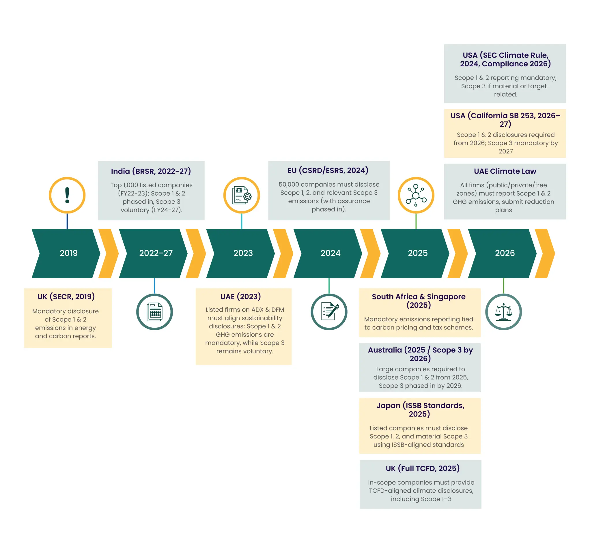

Mandatory emissions reporting has become a defining feature of modern corporate sustainability, marking the shift from voluntary disclosure to global compliance.
The method that companies use to report on their environmental impact has changed significantly in the last few decades. What was formerly a voluntary practice, motivated mainly by commercial goodwill and reputational benefits, has become a legal necessity in many parts of the world. Alongside climate risk management, businesses are now required to adopt mandatory carbon reporting standards.
The shift from voluntary to mandatory emissions reporting changes how companies' function, control risks, and interact with investors. At ecoPRISM, we view this change as more than just complying with the law. Businesses can transform data into insight, responsibility into opportunity, and sustainability into strategy.
At ecoPRISM, we see mandatory emissions reporting not just as compliance, but as a pathway to innovation and sustainability.
The Voluntary Beginnings: Planting the Seeds of Transparency
Sustainability disclosure was not standard in the 1990s and early 2000s. A few creative frameworks were used to encourage companies to voluntarily report their emissions, sometimes as part of broader corporate responsibility initiatives.
Some key milestones included:
| Year | Initiative | Contribution / Significance |
|---|---|---|
| 1997 | Global Reporting Initiative (GRI) | Introduced the first standardized sustainability reporting framework, covering a broad set of ESG topics. |
| 1998 | GHG Protocol | Defined Scope 1 (direct), Scope 2 (indirect from purchased energy), and Scope 3 emissions (value chain) emissions; became the global standard for emissions accounting. |
| 2002 | Carbon Disclosure Project (CDP) | Established a global platform for companies to disclose climate data to investors and stakeholders, enhancing transparency. |
Businesses had flexibility attributable to these frameworks. Early adopters gained credibility as investor interest in climate data increased, especially for S&P 500 enterprises and global corporations.
However, there were drawbacks to voluntary reporting:
- Disclosures were uneven and difficult to compare.
- Businesses selectively disclosed information, which led to inconsistent and incomplete reporting.
- Data quality often lacked accuracy, and verification processes were weak.
These shortcomings laid the foundation for future mandatory emissions reporting. As climate concerns increased, stakeholders wanted dependability more than goodwill.
Why Voluntary Reporting Wasn't Enough
The urgent necessity for obligatory GHG reporting was brought to light by the absence of comparability in emissions statistics. Although civic society, investors, and regulators recognized the importance of volunteer work, they were not providing the necessary scale or consistency. This increasing need made it clear that in order to fill the gaps created by voluntary procedures, obligatory emissions reporting was required.
Key drivers for change included:
- Investor Pressure: Standardized, decision-useful data was sought by BlackRock and other asset managers with trillion-dollar holdings.
- Policy Alignment: Governments need business data to track progress toward the goals of the Paris Agreement.
- Market Trust: Stakeholders needed to be reassured that claimed emissions weren't "greenwashing,"
In the lack of control, disclosures were scattered. One company may report Scope 1, another may report Scopes 1 and 2, while a third may completely exclude supply-chain data. This incompatibility erodes confidence and prevents effective climate action. Only through mandatory emissions reporting can stakeholders gain the trust and comparability needed for meaningful climate action.
The Global Shift Toward Mandatory Emissions Reporting
Over the last decade, governments and regulators worldwide have introduced legislation requiring companies to measure, report, and in many cases, obtain assurance for their emissions data.
Let's look at the global landscape:

-
(i) Europe: Setting the Benchmark
Europe has set the global benchmark in mandatory emissions reporting, particularly through CSRD and ESRS. The CSRD framework has effectively become the cornerstone of mandatory GHG reporting in Europe.
- Corporate Sustainability Reporting Directive (CSRD) - Implemented from 2024, replacing the older NFRD.
- Around 50,000 companies are now required to report, compared to just 11,000 earlier.
- Standardized under the European Sustainability Reporting Standards (ESRS).
- Assurance phased in: limited assurance initially, moving to reasonable assurance later.
The EU Green Deal ecosystems CSRD, Taxonomy, CSDDD, and CBAM have created one of the most comprehensive sustainability frameworks in the world.
-
(ii) United States: A Dual Approach
- The SEC rule and California's climate laws illustrate the U.S. commitment to mandatory emissions reporting. The SEC's climate rule has been a landmark in advancing mandatory carbon reporting for American firms.
-
SEC Climate Disclosure Rule (2024):
- Requires Scope 1 and 2 disclosures from public companies.
- Some Scope 3 emissions obligations were material.
- Compliance begins in 2026.
-
California SB 253 & SB 261:
- SB 253 requires Scope 1 & 2 disclosures from 2026, Scope 3 emissions from 2027.
- SB 261 requires large companies to report climate-related financial risks.
- Together, these laws apply to thousands of U.S. and global firms doing business in California.
-
(iii) Australia & Asia-Pacific
- Australia: Mandatory reporting starts January 2025 for large companies, extending to Scope 3 emissions in 2026.
- Japan: Introduced ISSB-based standards in 2025, requiring climate and sustainability reporting.
- Singapore & South Africa: Already link emissions reporting to carbon pricing and taxes, showing integration of climate and fiscal policy.
Such integration shows how mandatory emissions reporting connects climate action with fiscal policy.
-
(iv) United Kingdom
- SECR (2019) made Scope 1 and 2 reporting mandatory for many large firms.
- TCFD-aligned disclosures are being phased in for major companies, aiming for complete coverage by 2025
-
(v) India
- 2013-14: SEBI mandates Business Responsibility Reports (BRR) for the top 100 listed companies.
- 2022-23: Expanded into Business Responsibility and Sustainability Reporting (BRSR) for the top 1,000 listed entities.
-
Phased emissions disclosure:
- Scopes 1 & 2 are mandatory from FY24-25 (Top 250 entities), FY25-26 (Top 500), and FY26-27 (Top 1,000).
- Scope 3 (value chain) voluntary from FY25-26.
- Voluntary Scope 3 reporting is gaining momentum, with more than half of India's top 100 companies already disclosing such data.
- Carbon Credit Trading Scheme: India has introduced a domestic framework that mandates standardized emissions reporting. The scheme sets rules for measuring, verifying, and disclosing emissions data, ensuring consistency across companies while linking corporate disclosures with a structured, market-driven decarbonization pathway.
-
(vi) United Arab Emirates
- Mandatory disclosure: From 2023, all companies listed on ADX (Abu Dhabi Securities Exchange) and DFM (Dubai Financial Market) must publish sustainability reports aligned with GRI and TCFD.
- Scope coverage: Required reporting of Scope 1 & 2 emissions, with guidance to expand toward Scope 3.
- Integration with finance: Linked to the UAE Sustainable Finance Framework and supported by a National Carbon Registry to track verified reductions.
- UAE Climate Law (Federal Decree-Law No. 11 of 2024): Extends mandatory Scope 1 & 2 emissions reporting to all public, private, and free zone entities, requiring submission of emissions reduction plans. Compliance begins May 2026, with large emitters subject to MRV (monitoring, reporting, verification) under the National Carbon Registry.
This dual state-federal approach has positioned the U.S. as a major driver of global reporting.
Harmonization and Convergence
Mandatory emission reporting is being pushed for reasons other than harmonization rules. Companies have been juggling the GRI, CDP, SASB, and TCFD frameworks for years.
Convergence is now taking place:
- The ISSB standards create a global baseline that aligns with existing mandatory carbon reporting frameworks
- SBTi Net-Zero Standard 2.0 (2025) adds rigor to target setting.
- Carbon Data Open Protocol (CDOP) standardizes carbon market data under the Paris Agreement's Article 6.
This alignment enhances comparability, reduces redundancy, and aids investor decision-making. This convergence also ensures smoother adoption of mandatory emissions reporting across jurisdictions.
Challenges in the Mandatory Era
Shifting to mandatory emissions reporting isn't easy. For many companies, building systems that meet assurance requirements under mandatory GHG reporting remains complex.
- The complexity of scope 3: Despite being hard to quantify, supply chain emissions frequently make up 70-90% of a company's overall carbon impact. For global supply chains, Scope 3 mandatory reporting is one of the most resource-intensive requirements.
- The burden of assurance: Demanding independent validation necessitates specific knowledge, increases expenses, and imposes stringent timeframes.
- Regulation chaos: There are numerous overlapping regulations that multinational corporations must follow.
- The systems required to track, integrate, and accurately report emissions data to an audit-level standard are often lacking in many organizations.
Organizations must upgrade systems and expertise to meet the rigor of mandatory emissions reporting.
Opportunities Beyond Compliance
Despite its challenges, mandatory emissions reporting creates strategic opportunities for businesses.
- Operational Efficiency: Monitoring emissions saves energy expenses by routinely detecting inefficiencies.
- Investor Confidence: Standardized and validated data appeals to ESG-focused finance.
- Competitive advantage: Proactive, open reporting improves brand reputation and supply chain placement.
- Risk management: Disclosures assist businesses in anticipating the financial, legal, and environmental risks associated with climate change.
Conclusion: From Goodwill to Governance
A straightforward fact is reflected in the development of emissions reporting: climate change is a corporate, financial, and social issue in addition to an environmental one.
What began as voluntary efforts to show responsibility has developed into an international requirement. Businesses that proactively adopt this change will not only comply with legal requirements but also establish the standard for generating long-term value. The global shift toward mandatory GHG reporting ensures a stronger accountability framework.
At ecoPRISM, we see emissions reporting as the first step toward a more intelligent approach, increased resilience, and a more environmentally friendly future, rather than the ultimate goal.
Voluntary reporting may have started the journey, but mandatory emissions reporting ensures we finish it.
Navigating the Transition with ecoPRISM
At ecoPRISM, we help businesses turn mandatory emissions reporting into a competitive advantage.
Among our solutions are:
- ESG benchmarking: Evaluate how well you perform in terms of sustainability in comparison to leaders and peers.
- Carbon Footprint: Supporting businesses in calculating and tracking their Scope 1, 2, and 3 emissions.
- Simplify adherence to European regulations using CSRD Reporting Tools.
- ecoQUOTE: Emissions analytics and intelligent data collection.
- Advisory & Training: Assisting leadership groups in combining financial performance with sustainability strategy.
ecoPRISM helps companies transform reporting from a compliance chore into a competitive advantage by combining technology, expert advice, and in-depth ESG experience .
FAQs
Global emissions reporting standards are converging through initiatives like the ISSB Standards (IFRS S1 & S2), which provide a global baseline for sustainability disclosures. The EU CSRD, US SEC rules, and Japan's ISSB-based framework are aligning with these principles, reducing fragmentation. This convergence improves investor confidence and regulatory compliance by making mandated carbon, GHG, and emissions reporting more comparable across areas.
For investors, mandatory emissions reporting is essential since it provides reliable, consistent, and comparable climate data. Making better long-term investment decisions, avoiding greenwashing, and evaluating financial risks are all aided by this. In situations when Scope 3 emissions reporting is necessary, transparent reporting ensures that hidden supply chain risks are visible, enabling investors to deploy money responsibly.